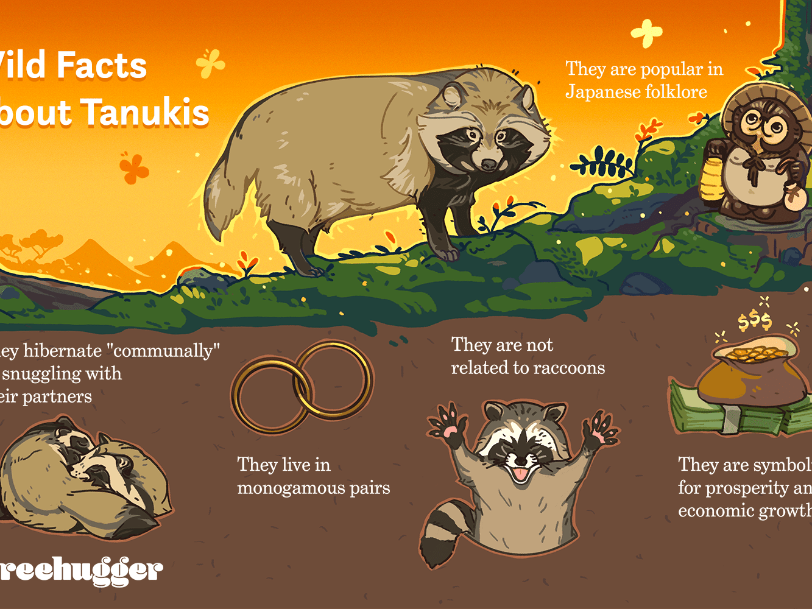

Should be responsive
The Japanese raccoon dog (Nyctereutes viverrinus),[1] also known as the tanuki, is a species of canid endemic to Japan. It is one of two species in the genus Nyctereutes, alongside the common raccoon dog (N. procyonoides), of which it was formerly thought to be a subspecies.[2] The Japanese raccoon dog has a relatively smaller stomach and shorter fur of lesser insulation value than mainland raccoon dogs.[3] A rare, white colour type can also be found.[4] Within Japanese folklore, the tanuki have had a significant role since ancient times. The legendary tanuki are reputed to be mischievous and jolly, masters of disguise and shapeshifting but somewhat gullible and absentminded. The animals have also been common in Japanese art, particularly as subjects for statues.
The common raccoon dog (Nyctereutes procyonoides), also known as the Chinese raccoon dog, Asian raccoon dog, mangut (its Evenki name),[2] neoguri (its Korean name) or simply raccoon dog is a canid indigenous to mainland East Asia and northern Vietnam. It is one of two extant species in the genus Nyctereutes, alongside the Japanese raccoon dog (N. viverrinus).[3] Despite its name, its closest relatives are the true foxes, and not the American raccoons.
The Japanese raccoon dog, also known as the tanuki, is a species of canid endemic to Japan. It is one of two species in the genus Nyctereutes, alongside the common raccoon dog, of which it was formerly thought to be a subspecies.